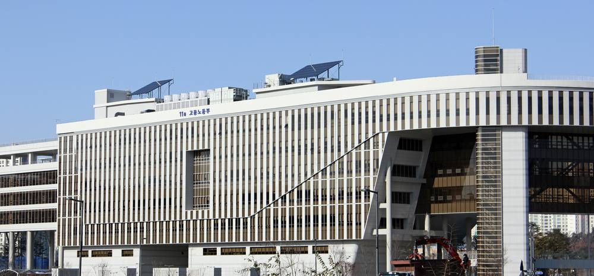

한파 취약사업장 3만여 곳 집중 관리…새벽 옥외작업 시간 조정 지도, 집중점검 600곳으로 3배

고용노동부, 15일부터 내년 3월 15일까지 한파 안전 대책기간…환경미화 노동자에 방한용품 1만4,300세트, 이주노동자에 외국어 안내서
정부가 올겨울 한랭질환 위험이 큰 사업장 3만여 곳을 골라 집중 관리하고, 환경미화·건설·물류처럼 새벽 옥외작업이 많은 업종에는 작업시간대 조정을 지도한다. 고용노동부는 15일부터 내년 3월 15일까지 범정부 한파 안전 대책기간을 운영한다고 13일 밝혔다.
노동부는 한파특보가 내려지면 새벽 작업시간 조정, 따뜻한 옷·물·쉼터 제공 등을 담은 '한파 안전 5대 기본수칙'을 중심으로 대응하고, 위기경보가 '심각' 단계가 되면 산업안전보건본부장 주관 특별 대응체제로 격상한다. 이달 30일까지는 취약사업장이 스스로 위험요인과 휴게시설을 점검하게 하고, 12~2월에는 약 4,000곳의 수칙 준수 여부를 점검한다. 특히 건설업·생활폐기물 수집운반업·농축산업 집중점검 대상은 지난해 200곳에서 600곳으로 늘린다.
산업안전보건법 개정으로 한파가 공사기간 연장 요청 사유로 명시된 만큼, 노동부는 한파로 공사가 늦어지면 발주기관에 공기 연장을 요청할 수 있다고 안내할 계획이다. 환경미화 노동자 등에게는 장갑·핫팩·귀덮개로 된 방한용품 1만4,300세트를 지원하고, 이주노동자를 고용한 사업장 약 1만 곳에는 한랭질환 예방 안내서 외국어판을 배포한다. 전국 이동노동자 쉼터 152곳 정보는 배달 앱과 안전보건공단 누리집에서 제공한다.
출처: 대한민국 정책브리핑(고용노동부) 2026-11-13 고용노동부 원문 보기